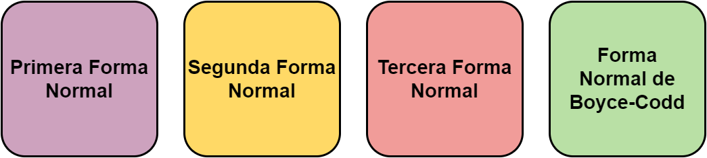

Normalización: Ejemplo
2. Normalización
Contenido
El diseño lógico es el proceso de construir un esquema de la información que utiliza la empresa, basándose en un modelo de base de datos específico, independiente del SGBD concreto que se vaya a utilizar y de cualquier otra consideración física. En esta etapa, se transforma el esquema conceptual en un esquema lógico que utilizará las estructuras de datos del modelo de base de datos en el que se basa el SGBD que se vaya a utilizar, como pueden ser: el modelo relacional, el modelo de red, el modelo jerárquico o el modelo orientado a objetos. Conforme se va desarrollando el esquema lógico, éste se va probando y validando con los requisitos de usuario.
Es importante tener presente que con la normalización se busca:
1. Tener almacenados los datos con el menor espacio posible.
2. Eliminar datos repetitivos.
3. Eliminar errores lógicos.
4. Ordenar los datos.
Para iniciar a desarrollar un ejemplo de normalización se describe cada una de las formas normales:

Obra publicada con Licencia Creative Commons Reconocimiento Compartir igual 4.0